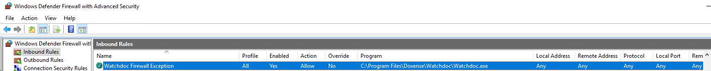
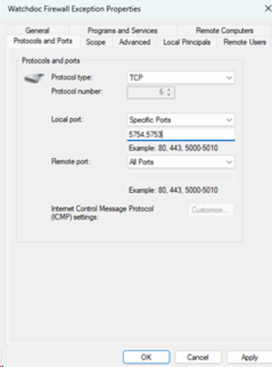
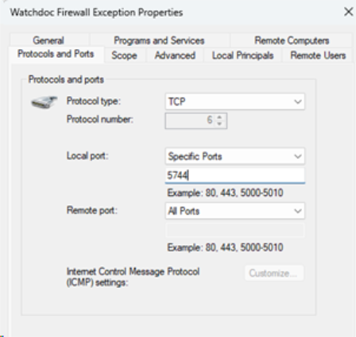
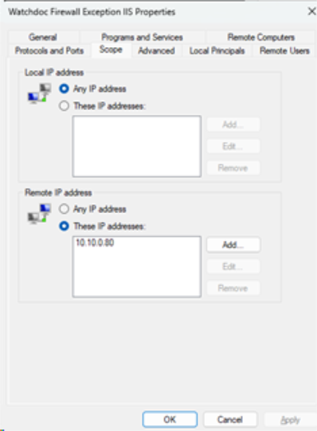
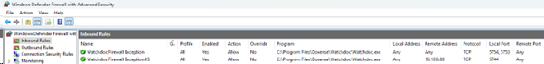

CVE-2025-58384 : exécution de code à distance
Contexte
Vulnérabilité affectant les versions de Watchdoc inférieures à 6.1.1 permettant de l’exécution de code arbitraire à distance (RCE) de manière non authentifiée et à distance.
Il est possible d’effectuer une exécution de code à distance en utilisant un appel api non authentifié.
(cf. https://www.cve.org/CVERecord?id=CVE-2025-58384)
Impacts
Exécution de code sur le serveur d’impression. Permet a minima de compromettre toutes les imprimantes (atteinte à la confidentialité) et de récupérer le compte Active Directory utilisé par le serveur d’impression.
Propositions de mitigation ou de correction
-
Mitigation : fermer l’accès distant au port 5744 exposé par Watchdoc. Pour les architectures avec serveur IIS déporté, restreindre l’accès à ce port au serveur IIS déporté.
-
Correction : mise à jour en Watchdoc 6.1.1
Description CVE
| Type de vulnérabilité | CWE - CWE-502: Deserialization of Untrusted Data (4.16) |
| Produit(s) concerné(s) et version(s) | Watchdoc au moins jusqu’à 6.1.0.5094 |
| Version(s) corrigée(s) | Watchdoc 6.1.1 |
| Type d’attaque | à distance, non authentifiée |
| Impact de la vulnérabilité | Exécution de code, Déni de service, Elévation de privilèges, Atteinte à la confidentialité, Atteinte à l’intégrité des informations |
| Vecteur CVSS4.0 | CVSS:4.0/AV:N/AC:L/AT:N/PR:N/UI:N/VC:H/VI:H/VA:H/SC:H/SI:H/SA:H |
| Score CVSS4.0 | CVSS v4.0 Score: 10.0 |
Procédure de mitigation
Par défaut, Watchdoc ajoute une règle dans le firewall Windows pour autoriser toutes les connexions entrantes. 
{kind=link}
La mitigation consiste à fermer l’accès distant au port 5744.
La solution proposée est d'autoriser l’accès distant aux ports 5754 et 5753 uniquement.
Pour ce faire,
-
éditez les propriétés du firewall ;
-
dans l’onglet Ports et protocoles, effectuez la configuration suivante :
-
Protocole Type : TCP
-
Remote port : All ports
-
Local port : specific ports 5754;5753

La règle devient alors la suivante :
{kind=link}
NB : les ports 5754 et 5753 sont les ports par défaut de Watchdoc. Si ceux-ci ont été modifiés, il faut ajuster leurs valeurs en conséquence.
Spécificité IIS déporté
Dans le cas où le service Watchdoc et le serveur IIS avec l’administration de Watchdoc sont installés sur des machines différentes, il faut autoriser l’accès au port 5744 uniquement depuis le serveur IIS.
Pour ce faire, dupliquer la règle précédente.
Modifier le port réseau pour n’autoriser que le port 5744 :

Autoriser la connexion distante depuis l’IP du serveur IIS uniquement (exemple avec 10.10.0.80) :

La configuration finale est la suivante :
